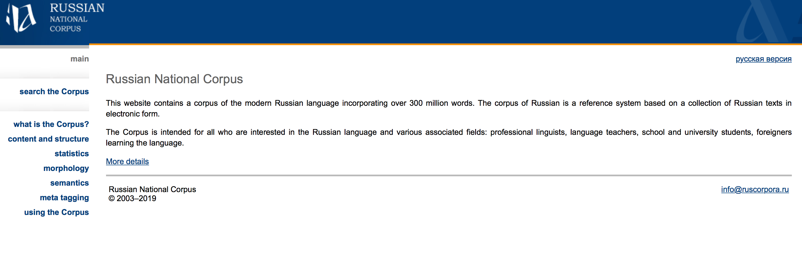

Mon page prive
Quant a moi
Mon Premon Gavrikov Semen Barre
Ou j'etudie HSE a la faculte de lettres
C'est qui m'interesse La litterature Francaise
Peu de moi Je me sens FRANCAIS
Comment les nouvelles technologies peuvent aider les philologues
Des nos jours, tout le monde utilise le Net mais malheureusement personne ne prend la peine de reflechir a ce qui facilite leur vie! Pourtant, les sciences humaines apprecient vraiment la necessite de technologie numerique C'est pourquoi chaque philologue doit etre au couran dans cette domaine! Quand vous avez besoin de statistiques de la litteratur, vous allez premierement surfer sur CLNR (Corpus national de la langue russe)
AVANTAGES
1 C'est pratique ( il y a tout ce qu'il faut)
2 C'est vraiment joli (les couleurs, les polices, les lettres etc)
VS
DESAVANTAGES
1 Parfois personne n'arrive pas a trouver l'information necessaire
2 Plein de choses qui doit etre cache

PLS DONT CHECK THIS RNC